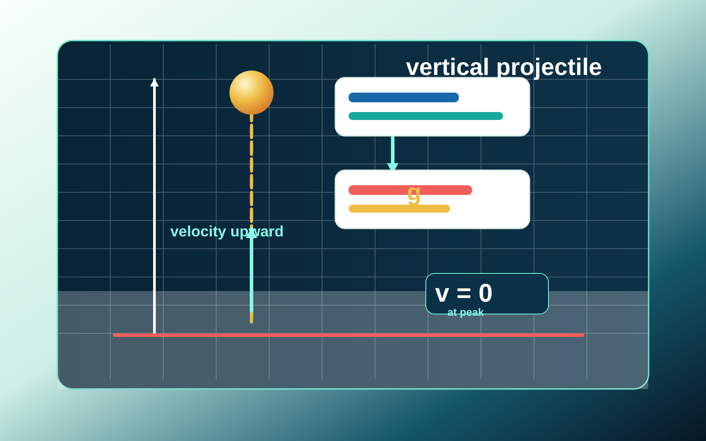

واحة الفيزياء - الصف العاشر
المقذوف الرأسي
رحلة تفاعلية لفهم حركة جسم يقذف إلى أعلى أو إلى أسفل على خط رأسي تحت تأثير الجاذبية الأرضية.

أهداف الدرس
بنهاية الرحلة ستكونين قادرة على فهم الحركة الرأسية وتحليلها
الفكرة الأساسية
الجاذبية تغيّر السرعة، لا اتجاه المسار فقط
في المقذوف الرأسي ندرس حركة الجسم على محور رأسي واحد. بعد ترك الجسم لليد تكون القوة المؤثرة الرئيسة هي وزن الجسم، لذلك يكون التسارع ثابتًا وموجهًا نحو الأسفل.
العلاقات والمفاتيح
اختاري العلاقة من المعطيات لا من شكل السؤال
نشاط تفاعلي داخل الموقع
غيّري السرعة والارتفاع وشاهدي النتيجة
استخدمي المحاكاة المبسطة لتوقّع زمن الوصول إلى القمة، أقصى ارتفاع، والزمن الكلي حتى العودة إلى الأرض.
اختاري طريقة التعلم
العرض التقديمي والفيديو داخل الصفحة
كل المصادر المضمنة تظهر هنا داخل الموقع. لن تحتاج الطالبة إلى مغادرة الصفحة أو فتح Google Sites.
مساعد فيزوقي داخل الموقع
اسألي عن الدرس دون مغادرة الصفحة
اختاري سؤالًا سريعًا، وسيعرض فيزوقي إجابة مرتبطة بالدرس الحالي.
رحلة تفاعلية
الآن لنبدأ النشاط التفاعلي
اختاري البطاقة الصحيحة، ثم قارني الإجابة بما تعلمته في الدرس.
تقييم سريع